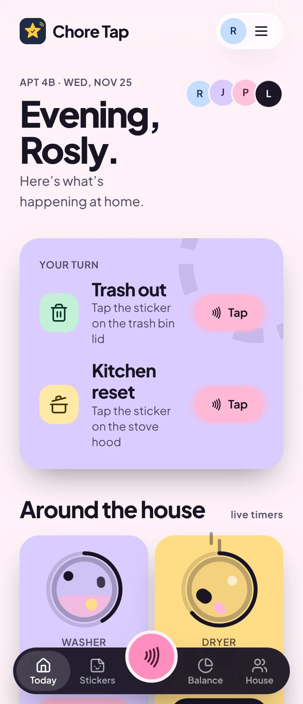
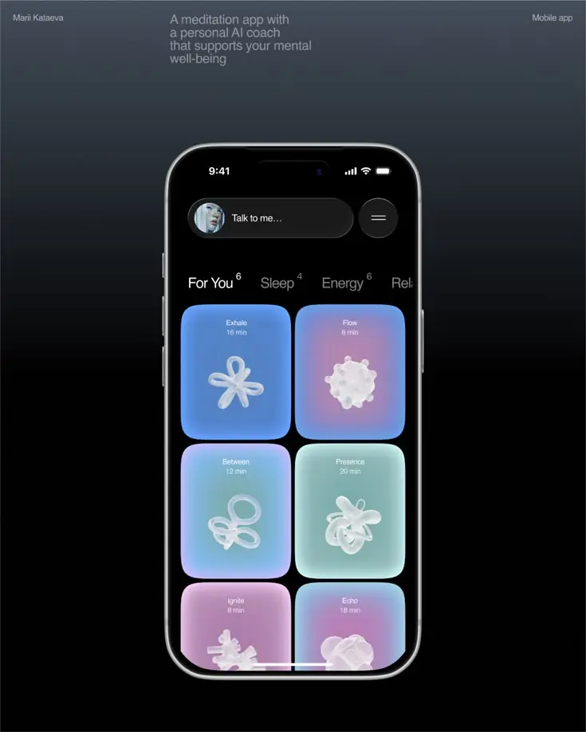
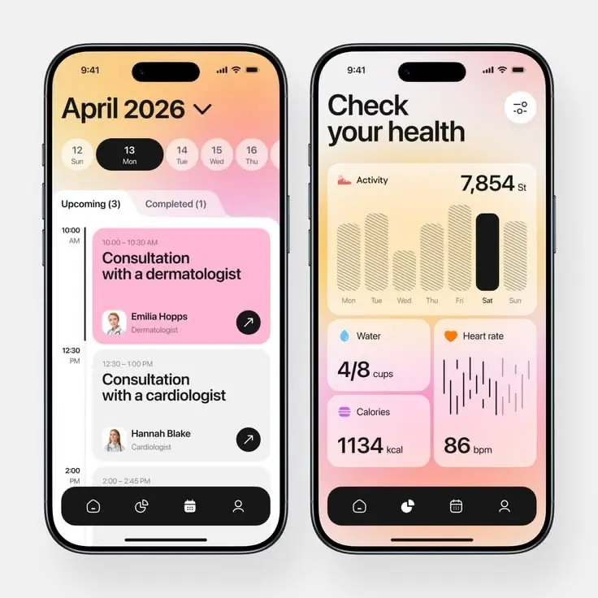
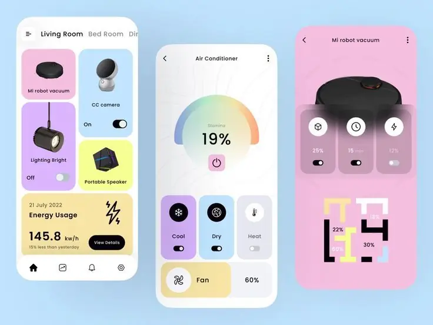
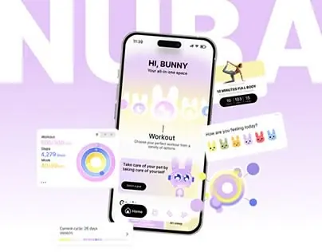
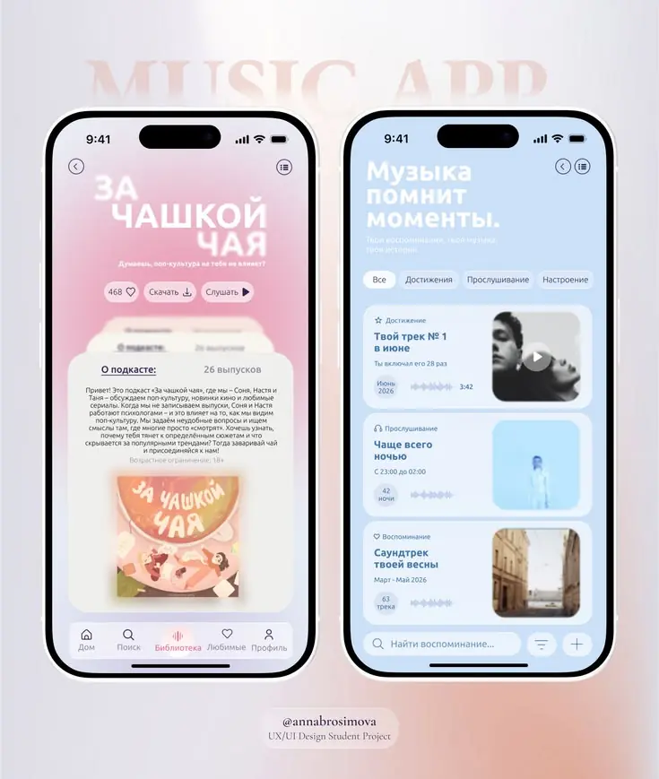
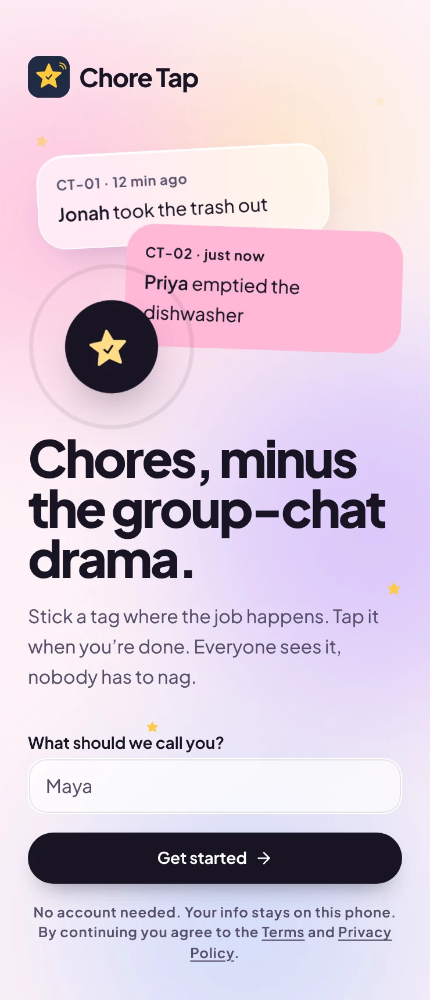

Roommates rarely fight about the schedule. They fight about work nobody saw, a dishwasher nobody can read, and the one person who ended up as the manager.
Most chore apps add another step at the exact moment people are least willing to take it. ChoreTap moves the check-off to where the work happens. A small NFC sticker on the trash bin, dishwasher or cleaning caddy logs the chore with one tap, credits the person who did it, and updates the whole house instantly.
Each one is a social problem first and a scheduling problem second.
Nobody sees who took out the trash, so effort goes unrecognized and resentment builds quietly.
“Did you already run the dishwasher?” turns into repeated texts.
Opening an app and ticking a box is the first step people skip, so the log goes stale.
One roommate becomes the manager, and the relationship pays for it.
I wrote the questions first, then the methods, then the bets I expected to be wrong about. The hypotheses below are the ones the design rests on.
Pink marks the test where a physical sticker meets a real kitchen.
Logging at the sticker will happen more often, and sooner, than logging in a checklist app.
Neutral visibility motivates. A ranking makes people feel graded and defensive.
A web page behind each sticker works on the first tap, with no install and no account.
People keep tapping after the sticker stops being fun.
Did anyone notice? How did that feel?
Three proto-personas built from the four problems and the reading list, then one empathy map for the person the product has to win over first.
Wants the house to run without having to ask.
Wants the work they do to be noticed, without announcing it.
Wants to fit in and not break the house rules.
Each sticker sits where the chore happens, so the check-off costs nothing extra.
Phone meets sticker. No app to open first.
The chore is credited to you by name.
The next person is up, automatically.
The whole house is told, so nobody has to be.
Plenty of chore apps lead with these. Leaving them out is a design decision I expect to defend in testing.
Scroll through six moments. The numbers on the phone match the notes beside it.
Setup happens at the spot. You scan it, name it, and it is live.
The home screen answers two questions. What do I owe, and what did everyone else just do.
The confirmation rewards the tap, shows what changed and leaves a way out.
A short list that answers what is stuck where, and whether it is working.
The hardest screen to get right. It shows the month as a picture and never ranks anyone.
Anyone can tap it: a new roommate, a friend staying over, a parent visiting.

Chores are a sore subject, so the interface needed to lower the temperature. I collected references for warm color, rounded cards and friendly type, then wrote my own direction from what they had in common.





Color is a reward. Neutral surfaces carry the screen, and the saturated colors show up only where something just happened.
A checked star with a tap signal, readable at sticker size.
A tap works one-handed with no camera, and it feels closer to touching the chore itself.
Some older phones and a few cases block NFC, so every sticker has a manual Tap button as backup.
Housemates only need to know who tapped. Asking for more makes the first tap the hardest one.
No account means no sync across devices at first. A guest’s history stays on their phone.
A ranking turns a shared home into a contest and punishes the person doing the invisible work.
Less to play with. The bet is that being noticed is a better reward than a score.
5 to 8 roommates about how chores are split today.
Starts with the last time a chore went undone, then moves to what felt fair.
Real stickers in a mock kitchen.
People tap, miss, and recover from mistakes while I watch.
Where a sticker is easy to reach and where it is awkward.
Tests the trash lid, dishwasher door, caddy and fridge.
Whether tapping continues, and whether visibility motivates or shames.
The diary study and the week-3 check carry this one.
Each sticker opens a lightweight page, so a guest or a new roommate can tap without installing anything. I built it to test the flow on real phones. Try it on the right.
Open the live prototype